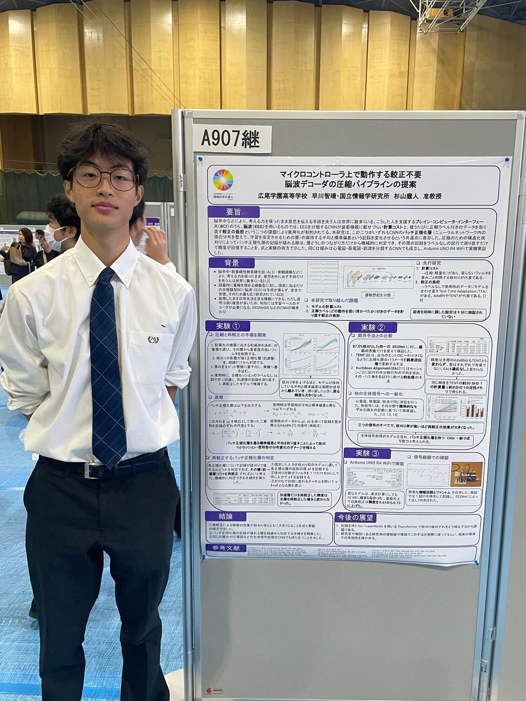
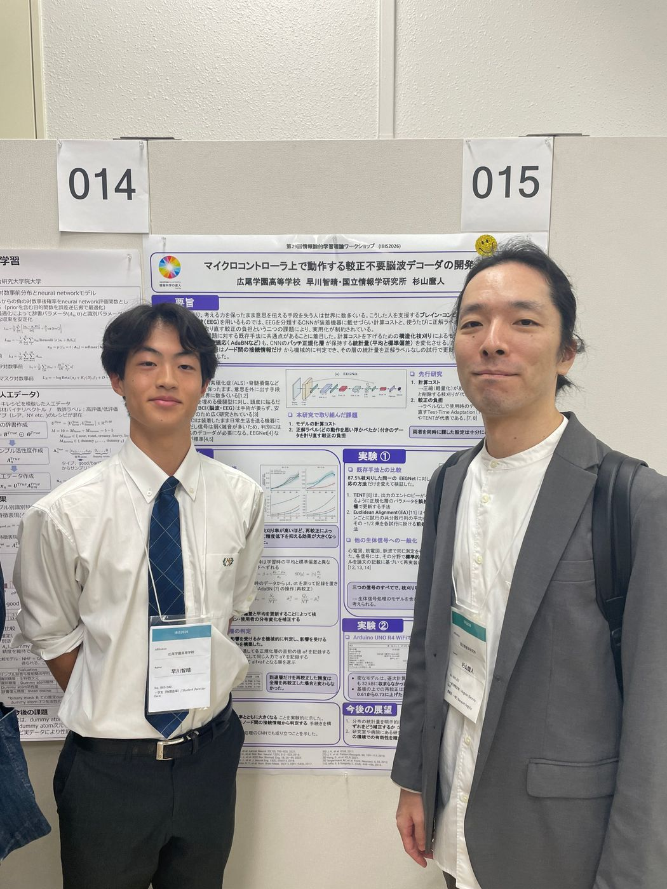
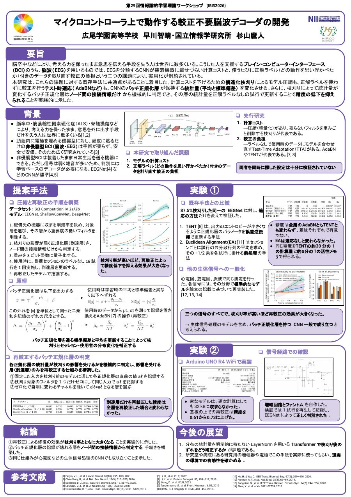

x ← x − η∇E(x) + √2ηT ξT =
Building safe, affordable AI for the physical world
Researching compression methods for biosignal decoders and building low-cost embedded systems. I want assistive and rehab devices to reach people recovering from strokes and other neurological injuries. Also building Akashi, a hardware based cybersecurity and accountability layer for physical AI.
Student Researcher @ National Institute of Informatics and the University of Tokyo's Matsuo–Iwasawa Lab.
What I'm building
Akashi
BuildingBuilding hardware based cybersecurity for physical AI.
Low-cost EMG controller
PrototypingReads muscle signals from surface electrodes and turns them into commands for assistive devices such as exoskeletons. Designed utilizing low-cost materials.
Novel compression method for CNN based Biosignal Decoders
Under reviewCombines structured pruning with label-free batch-norm recalibration.
Research and talks





Error propagation in AI pose estimation
Monte Carlo study of how measurement error in markerless motion capture changes injury-risk calls. Presented at two international conferences, one as an invited speaker, and one national.
GraphRAG for sports-injury prevention
Comparing a Neo4j knowledge graph against plain RAG and LLM-only answers.
Suri no Tsubasa Summer Seminar
One of about 40 students selected nationwide for a rigorous math camp started by the Fields Medalist Professor Hironaka Heisuke; did a presentation on AI's role in scientific discovery.
Other Projects
AI workflow tools
Software for enterprise clients' workflows, and tooling for building energy functions for quantum-annealing optimization.
eNavi
Building an organization that provides free, no-experience-needed electronics events and hackathons for junior-high and high-school students across Japan, with support from companies and institutions.
Recognition
- Bronze MedalAsia-Pacific Olympiad in Artificial Intelligence 2026Japan national team, 129 students from 18 nations
- Gold MedalJapan Olympiad in Artificial Intelligencenational selection for IOAI
- 3rd PlaceSTEM Racing Japan National FinalsProfessional Class
- 3rd PlaceGLOBAL TECH Japan National FinalsMIT Beaver Works
- 2nd PlaceIYNA × Alzheimer's Association Ideathoninternational, high-school division
- Excellence Award20th High School Science Research ConferenceChiba University
- FinalistAll Japan AI Hackathonyoungest team to become finalist
- PosterIBIS2026 Information-Based Induction Sciences Workshop
- Special AwardGlobal Enterprise ChallengeJapan round
- Conrad InnovatorConrad Challenge
- Honorable MentionU-21 Research Conference, IEEJ
- SemifinalistMynavi Career Koshien72 of 3,151 entries, Top 2%
- Honorable MentionJapanese Olympiad in Informaticsqualifying round
- 2nd PlaceFedEx/JA International Trade Challenge Japanrepresented Japan at the Asia-Pacific Finals
- 33rd PlaceWorld Scholar's Cup Tournament of Champions, Yale University
- 13th Best SpeakerJapan Junior High Parliamentary Debate Tournament
Work with me

I'm looking for:
- Rehab clinics and research labs that want to test low-cost decoders
- Teams building exoskeletons and assistive devices
- Teams and labs building robots and physical AI
- Grants and early funding
tomohayakawa25@gmail.com